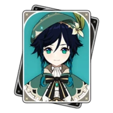

Como os personagens funcionam?
Cada personagem possui um elemento específico com habilidades únicas, junto de passivas e multiplicadores de dano, fazendo com que eles tenham que ser devidamente estudado quando de trata de seu arsenal, afinal, usamos artefatos, um tipo de relíquia que possui diversos tipos com diferentes atributos entre eles. Os personagens potem ser obtidos até no máximo 7 vezes, onde da segunda vez em diante, você ganha uma constelação do personagem, dando a ele novos atributos e o deixando mais forte.
Cada personagem possui uma raridade, sendo 5 ou 4 estrelas, isso define o quão difícil é obter o personagem, como também sua força.
(Os personagens apresentados abaixo são apenas aqueles que possuo em minha conta, ainda exitem outros personagens que não adquiri)
Anemo
| Imagem | História | Raridade |
|---|---|---|
|  | Venti é o Deus ou Arconte Anemo, também conhecido como Barbatos, aplicando a liberdade em toda sua região | 5★ |
| Kazuha é um samurai errante do clã Kaedehara, Kazuha atualmente faz parte da tripulação da Frota Crux de Beidou. | 5★ | |
| Descendente do prestigioso Clã Gunnhildr, Jean é a Grande Mestre Intendente em exercício dos Cavaleiros de Favonius. | 5★ | |
| Sucrose é uma alquimista especializada em bioalquimia, ela também atua como assistente de Albedo, o alquimista chefe dos Cavaleiros de Favonius. | 4★ | |
| Uma ninja do Shiyuumatsu-Ban que está lutando para crescer. Sayu acredita que dormir pode ajudá-la a crescer, e é por isso que ela prefere usar suas técnicas ninja para se esconder e dormir. | 4★ | |
| Heizou é um detetive de Inazuma que trabalha para a Comissão Tenryou. | 4★ |

Cryo
| Imagem | História | Raridade |
|---|---|---|
| Ela é a filha mais velha do Clã Kamisato e irmã de Kamisato Ayato. Por ser educada, elegante e graciosa, as pessoas comuns não têm nada a dizer mal de Ayaka. | 5★ | |
| Qiqi foi ressuscitada como um zumbi pelos adepti, ela acabou aos cuidados de Baizhu e agora trabalha no Chalé de Bubu no Porto de Liyue. | 5★ | |
| Ela é a protagonista do jogo Horizon Zero Dawn, e é apresentada como um personagem de Collab (colaboração) entre Guerrilla e miHoYo. | 5★ | |
| Exorcista de Liyue , Chongyun nasceu com uma energia positiva excessiva, o que provou ser uma ajuda e um obstáculo. | 4★ | |
| Rosaria é membro da Igreja de Favonius em Mondstadt. | 4★ | |
| Kaeya é um Capitão de Cavalaria dos Cavaleiros de Favonius. Ele é muito estimado pelo povo de Mondstadt mesmo com todas as suas excentricidades e segredos. | 4★ | |
| Diona, apesar de ser uma bartender em A Cauda do Gato, ela realmente despreza o álcool e não quer nada mais do que arruinar a indústria do vinho de Mondstadt uma façanha mais fácil de dizer do que fazer já que seus clientes simplesmente amam suas bebidas. | 4★ |
Dendro
| Imagem | História | Raridade |
|---|---|---|
| Nahia é o corpo mortal da Lorde Menor Kusanali, atual Arconte Dendro. | 5★ | |
| Colei é uma Guarda-Florestal em Treinamento que patrulha a Floresta Avidya. Por trás de sua personalidade entusiasmada, encontra-se uma personalidade bastante introvertida. | 4★ |
Electro
| Imagem | História | Raridade |
|---|---|---|
| A Shogun Raiden é uma marionete, e serve como avatar de Beelzebul, a atual Arconte Electro de Inazuma, enquanto Ei medita eternamente dentro do Plano da Eutimia. | 5★ | |
| Uma filha adotiva do Clã Kujou da Comissão Tenryou. Leal a seu clã e ao Shogun, Kujou Sara cumpre suas ordens de acordo com a vontade do Shogun. | 4★ | |
| Kuki Shinobu é a vice-líder da Gangue Arataki e responsável por consultas jurídicas, negociações comerciais, organização de banquetes e encomendação de vestuários. | 4★ | |
| Fischl é uma investigadora da Guilda de Aventureiros de Mondstadt, acompanhado pelo corvo noturno Oz. Fischl afirma vir de um mundo além de Teyvat. Ela é uma aventureira ousada com teorias aparentemente bizarras que acabam se revelando verdadeiras. | 4★ | |
| Outrora uma grande maga reconhecida como o graduada mais ilustre da Academia Sumeru em 200 anos, Lisa voltou a Mondstadt para se tornar a humilde Bibliotecária dos Cavaleiros de Favonius. | 4★ | |
| Abandonado quando criança, Razor foi acolhido pelo Lobo do Norte, Andrius, e criado por sua matilha de lobos no Reino dos Lobos. Após um encontro casual com Varka, o atual Grande Mestre dos Cavaleiros de Favonius e Cavaleiro de Boreas, ele começou a se integrar aos humanos novamente. | 4★ | |
| Beidou é a capitã da Frota Crux. Além de suas capacidades como capitã de frota e sua força imensa, muitos em Liyue a conhecem por sua falta de medo em relação ao Tianquan dos Qixing. | 4★ |
Geo
| Imagem | História | Raridade |
|---|---|---|
| Com poderes de pedra, Zhongli é o arconte mais antigo de Teyvat. Ele protege a região de Liyue, em que também é conhecido como Rex Lapis e Morax. Ele foi o criador da moeda do continente, chamada Mora. | 5★ | |
| O misterioso Albedo é o Chefe Alquimista e Capitão da Equipe de Investigação dos Cavaleiros de Favonius, com Sucrose como sua assistente. Ele tem um desejo infinito de aprender sobre o mundo de Teyvat, estudando cuidadosamente todos os objetos ao seu redor. | 5★ | |
| Yunjin é a diretora atual da Trupe de Ópera Yun-Han, e também é uma figura muito conhecida no Porto de Liyue. Uma dançarina, cantora e compositora de prestígio que se apresenta na Casa de Chá Heyu. | 4★ | |
| Ningguang é a Tianquan dos Qixing de Liyue. Ela detém uma posição de riqueza além de muitas outras em Teyvat. A posição e as habilidades de Ningguang permitiram que ela construísse sua maior conquista, a flutuante Câmara de Jade que zela por toda Liyue. | 4★ | |
| Noelle, embora ainda não seja um cavaleiro, ela procura um dia se juntar aos Cavaleiros de Favonius servindo primeiro como uma empregada obediente. | 4★ | |
| Gorou faz parte da Resistência de Sangonomiya contra o Decreto de Caça à Visão proclamado por Baal. | 4★ |
Hydro
| Imagem | História | Raridade |
|---|---|---|
| Ayato Kamisato é o jovem promissor e chefe atual da Comissão Yashiro e do Clã Kamisato, é culto e educado, e sempre tem uma forma de fazer as coisas. | 5★ | |
| Astróloga de grande habilidade e igualmente grande orgulho, Mona fixou residência em Mondstadt para evitar incorrer na ira de sua mestra depois de ler inadvertidamente o diário dela. | 5★ | |
| Barbara é a Diaconisa da Igreja de Favonius e auto proclamada "ídolo" depois de aprender sobre eles com a intrépida aventureira Alice. | 4★ | |
| Xingqiu é o segundo filho do dono da Guilda de Comerciantes de Feiyun, um grupo influente em Liyue, e também é um autoproclamado praticante das artes do Clã Guhua. | 4★ |
Pyro
| Imagem | História | Raridade |
|---|---|---|
| Nascido na influente Família Ragnvindr, Diluc é o atual proprietário do Adega do Alvorecer e um nobre de alta estima na sociedade de Mondstadt. Embora um incidente anterior o tenha levado a se separar dos Cavaleiros de Favonius, ele continua a proteger Mondstadt à sua própria maneira. | 5★ | |
| Hutao é a 77ª Diretora da Funerária Wangsheng. | 5★ | |
| Amber é a única Aventureira restante dos Cavaleiros de Favonius. Ela está sempre pronta para ajudar os cidadãos de Mondstadt seja em algo simples ou talvez uma tarefa mais desafiadora. | 4★ | |
| Um órfão descoberto por um aventureiro idoso quando bebê, Bennett foi criado na Guilda de Aventureiros de Mondstadt. Ele é o único membro da "Equipe de aventura de Benny", já que todos os outros deixaram a equipe depois de experimentar o infortúnio constante que o segue. | 4★ | |
| Ela é a chefe de cozinha do Restaurante Wanmin e o administra ao lado de seu pai Chef Mao. Como chef, Xiangling não tem medo de experimentar receitas diferentes ou ingredientes "exóticos"... Tornando seus pratos únicos. | 4★ | |
| Rock 'N' Roll é um estilo de música relativamente impopular em Liyue, tendo sido recentemente trazido de Fontaine. Xinyan, no entanto, adora o som e ela está lentamente, mas seguramente, acumulando uma base de fãs própria enquanto se apresenta no Porto de Liyue. | 4★ | |
| Vindo de Mondstadt, Thoma é empregado do Clã Kamisato e um animado "Mediador" em Inazuma. | 4★ |